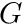
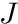

|
Chi-Tech
|
|
Chi-Tech
|
Let us tackle the basic diffusion equation as applied to steady state heat transfer on a 3D orthogonal mesh.

The purpose of this tutorial is to understand the basics of the input paradigm which is completely different from the traditional input-card based method. ChiTech uses an imbedded Lua console. For a history of Lua please see its wikipedia page here. This paradigm allows the user to control many aspects of the program flow as well to be more versatile when creating inputs, i.e. reading files, for loops to create multiple entities etc. So let us get started.
Go to the directory of your choosing and make an input file of your choosing. The input file does not require a specific .lua or .inp extension although if you use .lua then there are many text editors that will be able to provide syntax highlighting.
This function call creates a new mesh handler and pushes it to a global stack. It also make the newly created handler the "current" meaning all mesh operations will operate on this handler. The concept of creating, reading or manipulating computational meshes is centered on operating on a specific chi_mesh::MeshHandler object. Physics/math objects can then freely operate on meshes by simply specifying which handler to use.
For this we will create a simple orthogonal grid of 32x32x32 cells (32,768 total) as shown in Figure 1.
The first step of this process is to define an array of nodes starting from -1.0 with a distance  between each of them. In lua we can create this array programatically:
between each of them. In lua we can create this array programatically:
Note here that lua arrays cannot use  since arrays in lua are not zero based. The next step is call chiMeshCreate3DOrthoMesh with the node arrangement along the X-direction, Y-direction and Z-direction, which in our case is the same,
Some work has been encapsulated behind the scenes here. Firstly, a 2D surface mesh was created and assigned to a region. Secondly a surface-mesher (chi_mesh::SurfaceMesher) and a volume mesher (chi_mesh::VolumeMesher) has been assigned to the mesh handler. The volume mesher is not executed because the macro allows the user to first assign parallel partitioning.
The underlying mesher for a 3D mesh is an extruded mesh from 2D. This mesh has some partitioning properties that can be set to allow parallel simulations, however, we will just focus on serial simulations for now. The next step to complete meshing is to execute the volume mesher. Since we are not going to set any partitioning parameters we will just execute it now.
Materials ID's can conveniently be specified using logical volumes. There are many options for logical volumes ranging from primitive parametric surfaces to non-convex user generated surfaces using surface meshes (see chiLogicalVolumeCreate). For this tutorial we will use a rectangular paralellipiped (RPP or brick) as follows.
We first create a material using the CHI_LUA::chiPhysicsAddMaterial function. The handle of this material will essentially be zero but it is not technically required by the chiVolumeMesherSetProperty() function since this function operates on the integer supplied. This material is added to the physics environment and therefore has scope over all mesh handlers and all physics entities. We then create a logical volume using the function CHI_LUA::chiLogicalVolumeCreate with arguments RPP, specifying that we will be using a Rectangular Parallelipiped and then a series of dimensions specifying xmin-xmax-ymin-ymax-zmin-zmax. Every cell centroid within these dimensions will be flagged as being "within" the logical volume.
Actually setting the mesh's material id's is a utility facilitated by a volume mesher property and hence we call CHI_LUA::chiVolumeMesherSetProperty with a property index MATID_FROMLOGICAL. Next we provided a handle to the logical volume (vol0) and the desired material id. Logical volumes are very diverse and their uses are discussed elsewhere.
The culmination of this step is all done within a physics agnostic framework. The user can even export the mesh for visualization using the function chiRegionExportMeshToObj(). The extruded mesh is shown below:
Now that the cells have been assigned a material id we need to add properties to the material conducive to a diffusion simulation. For a heat transfer diffusion simulation we will need to know the thermal conductivity "k" and the volumetric source strength "q". Both of these can be simple scalar values.
In this code we created the material properties using the function CHI_LUA::chiPhysicsMaterialAddProperty which requires a handle to the reference material, the property type (SCALAR_VALUE), and a name for the property. Unlike extrusion layers the property name can be used in further calls to refer to the specific property.
Material property values are set using the function CHI_LUA::chiPhysicsMaterialSetProperty which again expects a handle to the reference material, then either a material property id or name (in this case name), then an operation index and value(s). For this case we used an operation index SINGLE_VALUE which is the only operation supported by SCALAR_VALUE. In future the user can specify, as an example, temperature dependent values which will support the operation FROM_TABLE, but that is a topic for a different time.
The following sequence of function calls completely define the diffusion solver.
We first create the diffusion solver with a call to CHI_LUA::chiDiffusionCreateSolver. This creates the solver and pushes it onto the physics handler. The function returns the handle. We then add our mesh region to this solver using the function CHI_LUA::chiSolverAddRegion which expects a handle to the reference solver followed by the handle to the relevant region.
Next we can set numerous diffusion solver properties which can comprehensively viewed in its specific documentation (CHI_LUA::chiDiffusionSetProperty).
The final step of this process is to initialize and execute the diffusion solver.
The execution of a Chi-Tech physics module culminates in the creation of one or more field functions. These field functions should all be populated for use during the initialization phase of the solver. Users can get handles to all the field functions by using the chiGetFieldFunctionList call. Thereafter, the field function can be exported to VTK-format which can be read by Paraview.
Here is the complete input file with comments
Assuming you added the executable to your PATH environment variable, the code can be executed by typing the executable name followed by the input file path (relative or absolute).
ChiTech Tutorial01.lua
The output produced will look as follows:
[0] 2020-02-23 16:53:20 Running ChiTech in batch-mode with 1 processes. [0] ChiTech number of arguments supplied: 1 [0] 00:00:00 VolumeMesherExtruder executed. Memory in use = 12.3594 MB [0] VolumeMesherExtruder: Total number of cell layers is 32 [0] VolumeMesherExtruder: Extruding cells [0] VolumeMesherExtruder: Cells extruded = 32768 [0] VolumeMesherExtruder: Number of cells in region = 32768 [0] VolumeMesherExtruder: Number of nodes in region = 35937 [0] 00:00:00 chiVolumeMesherExecute: Volume meshing completed. Memory used = 40.4 MB [0] Total process memory used after meshing 52.7 MB [0] 00:00:00 Setting material id from logical volume. [0] 00:00:00 Done setting material id from logical volume. Number of cells modified = 32768. [0] [0] 00:00:00 Diffusion Solver: Initializing Diffusion solver PETSc [0] Computing cell matrices [0] Computing nodal reorderings for CFEM [0] Time taken during nodal reordering 0.021969 [0] Domain ownership: 35937 35937 [0] Determining nodal connections [0] Building sparsity pattern. [0] Setting matrix preallocation. [0] 00:00:16 Diffusion Solver: Diffusion Solver initialization time 15.254 [0] Diffusion Solver: Assembling A and b [0] 00:00:16 Diffusion Solver: Local matrix instructions [0] 00:00:16 Diffusion Solver: Communicating matrix assembly [0] Diffusion Solver: Solving system [0] Diffusion iteration 0 - Residual 418.5914509 [0] Diffusion iteration 1 - Residual 41.4175004 [0] Diffusion iteration 2 - Residual 5.3813804 [0] Diffusion iteration 3 - Residual 0.7898487 [0] Diffusion iteration 4 - Residual 0.1424018 [0] Diffusion iteration 5 - Residual 0.0280161 [0] Diffusion iteration 6 - Residual 3.749e-03 [0] Diffusion iteration 7 - Residual 5.062e-04 [0] Diffusion iteration 8 - Residual 9.615e-05 [0] Diffusion iteration 9 - Residual 9.141e-06 [0] Diffusion iteration 10 - Residual 1.880e-06 [0] Diffusion iteration 11 - Residual 2.131e-07 [0] Convergence reason: 2 [0] Diffusion Solver: Number of iterations =11 [0] Timing: [0] Assembling the matrix: 0.161813 [0] Solving the system : 0.148049 [0] Diffusion Solver execution completed! [0] Exporting field function phi to files with base name Tutorial1Output [0] Final program time 00:00:17 [0] 2020-02-23 16:53:37 ChiTech finished execution of Tutorial01.lua